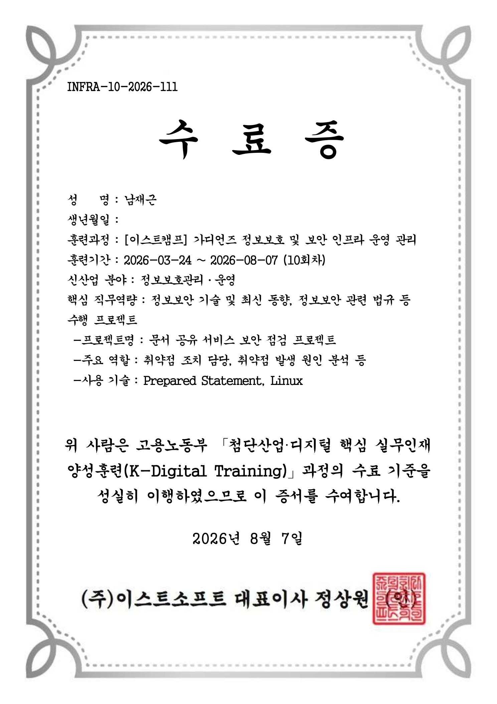

네트워크 구축 및 ACL 검증
VLAN과 라우팅을 적용한 네트워크를 구성하고, 본사·지사 통신 기준에 맞춰 ACL 정책을 반복적으로 테스트했습니다.
SECURITY · NETWORK · INFRASTRUCTURE
Security Infrastructure Portfolio
가디언즈 정보보호 및 보안 인프라 운영 관리 교육을 통해 네트워크 구성, 접근 통제, 웹 취약점 분석, 시스템 점검을 경험했습니다. 설정을 적용하는 데서 끝내지 않고 직접 테스트하며, 예상과 다른 결과가 나오면 확인 범위를 나누어 원인을 찾고 해결될 때까지 파고드는 편입니다.
RECOGNITION
프로젝트와 보안 문제 해결 과정에서 얻은 결과입니다.

교육 수료
2026년 3월 24일부터 8월 7일까지 정보보호관리·운영 과정을 수료했습니다. 네트워크 구성, Linux 서버 운영, 보안관제, 웹 취약점 분석과 시스템 보안점검을 실습했습니다.
수료증과 학습 기록 보기 →WHAT I DO
교육과 팀 프로젝트에서 직접 맡거나 협업하며 경험한 영역입니다.
VLAN과 라우팅을 적용한 네트워크를 구성하고, 본사·지사 통신 기준에 맞춰 ACL 정책을 반복적으로 테스트했습니다.
취약한 환경에서 공격 조건을 확인하고, 보안 조치를 적용한 뒤 같은 방법으로 다시 시험하며 개선 여부를 확인했습니다.
멘토 피드백을 바탕으로 점검 스크립트의 공통 틀을 먼저 시험하고, 여러 점검 결과가 같은 형식으로 출력되도록 정리했습니다.
모의해킹 결과보고서와 점검보고서 작성에 참여했으며, 3차 프로젝트에서는 전체 발표자료를 직접 구성했습니다.
TOOLS & ENVIRONMENT
Cisco Packet Tracer · VLAN · Routing · ACL · NAT · VPN · GNS3
pfSense · Suricata · Wazuh · Kali Linux · OWASP 기반 취약점 점검
Ubuntu · Rocky Linux · Shell Script · cron · ClamAV · YARA
PowerPoint · 모의해킹 결과보고서 · 시스템 점검보고서 · 시연 영상
SELECTED WORK
LEARNING ARCHIVE